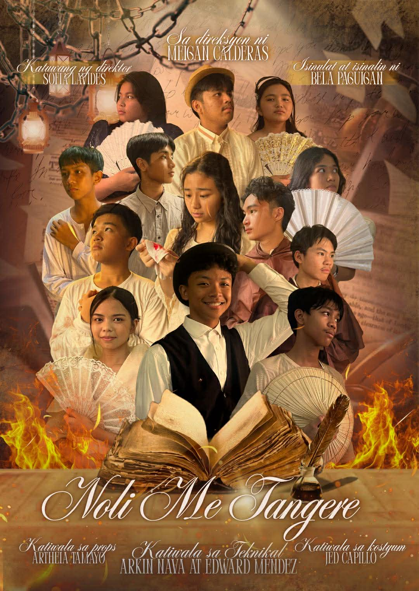

1. The most important thing I learned from the play is we cannot do things alone and we always need the opinion and suggestions of others. A good play requires a lot of teamwork and understanding that all members should accomplish. We really need each other to accomplish their tasks efficiently to run the play smoothly.
2. My experience and all of the lessons I learned can be used for future plays and so that I can improve on how I direct and lead others. The knowledge I also gained from the novel Noli Me Tangere can be used in my grade 10 Filipino subject and to also appreciate Filipino novels.
3. Yes, I was the director of our play. It may not be the easiest but I really enjoyed guiding all of the committee and cast members as I realize their big potentials and the talent they have.
4. Noli Me Tangere, if I were to explain this topic to a classmate, I would greatly explain all of the amazing characters the novel had, how they perfectly portrayed characters and certain people commonly known today. I would also connect the novel in todays world to easily understand how everything happened in the past.
5. A musical play like this is important to let the students the experience of having a play in their high school life and let students experience a pure bond with their classmates in their practices and while preparing for the play. A section performance task like this reminded us that we are not just doing our school tasks just for the sake of having grades but to enjoy our life as students.
Ang akdang Noli Me Tangere ay nagsisilbing paalala para sa mga Pilipino na maging mulat para sa ating kalayaan at karapatan. Ang katotohanan ay dapat ipaglaban at ang pagbabago ay dapat hindi isawalang-bahala.

Tunghayan at panoorin ang pagtatanghal ng 9-Faith!